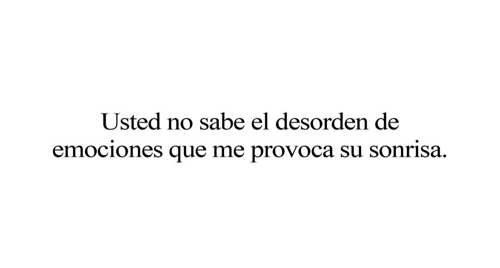

Acaso usted creyó que iba a safar de mi cursilería? Pues no! Capaz no tenga mucha coherencia lo q escribí pero tómalo como partes separadas de pensamientos y sentimientos q escribí para vos. Así como los poemas del chocolate dos corazones que no tienen sentido bueno así pero más tierno porq claro lo escribí yo q soy pura ternura. Mire que me esmere un montón se me Lee todo y sin refunfunear. Creo en que las cosas pasan por algo. Creo en que reencontrarnos en este momento y de esta manera es por algo. Creo que tenemos una segunda oportunidad y por mi parte la voy a aprovechar al máximo. Cambio mucho todo entre nosotros en estos meses. Y ya van a hacerse casi 4 meses desde que nos volvimos a cruzar y no creo q sea casualidad. Mis días son más divertidos desde que volviste a mi vida. A pesar de haber tomado caminos diferentes, creo q jamás nos dejamos y acá está el claro ejemplo de habernos vuelto a encontrar. Amo esta locura. Amo saber que estamos juntos y compartir cada día con vos. Amo tus ocurrencias y las meriendas juntos (que son hiper súper necesarias en mi día a día, no pueden faltar) Amo verte sonreír y reír. Tus ojos chinitos, tu boca y tus manos. Amo tu forma de ser y tú sencillez. Amo tu sentido del humor (aunq a veces no lo entienda) Amo que me conozcas tanto al punto de saber cuando estoy pensando o me pasa algo. Gracias por el amor, las risas y lo compartido dia a día. Gracias x la enorme paciencia que me tenés, por interesarte, escucharme y sobre todo ayudarme a quitarme los miedos e inseguridades. Gracias por demostrarme cada día que querés estar conmigo y por ser lo mejor que me pasó este año. Gracias por hacerme tan bien y tan feliz. por la paz, tranquilidad y la confianza. Gracias por compartir parte de tu vida y tu tiempo conmigo. Sos un pibe que vale mucho, una muy buena persona y te mereces ser inmensamente feliz. Admiro la persona que sos y como siempre salís adelante y nunca te rendis, como ayudas a tu familia y no se te pierde ningún detalle y esas cosas que haces para devolverle a tu mamá todo lo q hizo por vos y tus hermanos cuando eran chicos. Admito tu fortaleza y tus ganas de crecer. Tu ambición y tu orgullo. Aunq te hagas el duro y digas que sos un hdp, se que no es asi. Q sos súper sensible y amoroso con las personas q te importan de verdad y q se lo merecen. Deseo inmensamente que cumplas todo lo que te propongas y que pueda estar ahí a tu lado para verte crecer. Feliz cumpleaños amor de mi vida!!! Espero que sea el primero de muchos cumpleaños más juntos! Te amo mucho ❤️ Cortemos con tanta dulzura... Pito pito pito pito pito PD: no te mueras de sobredosis de cursilería. PD2: te confirmo estoy loca, si x vos. PD 3: Si, sé dónde me meto y adivina qué? Me encanta
